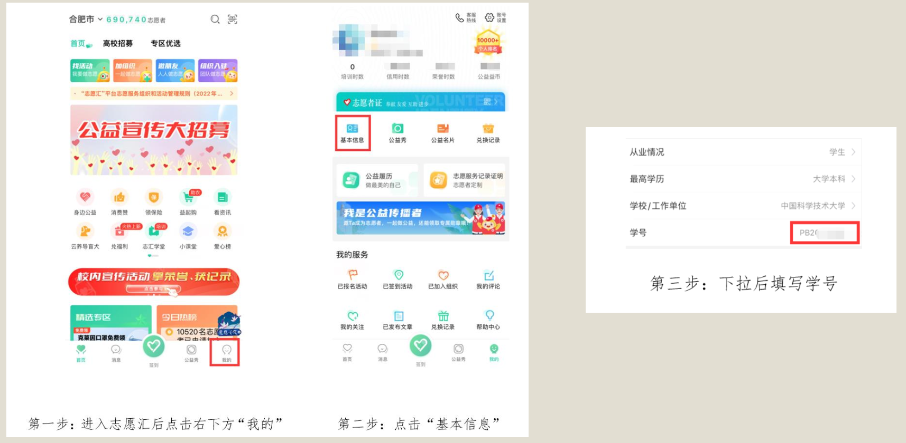
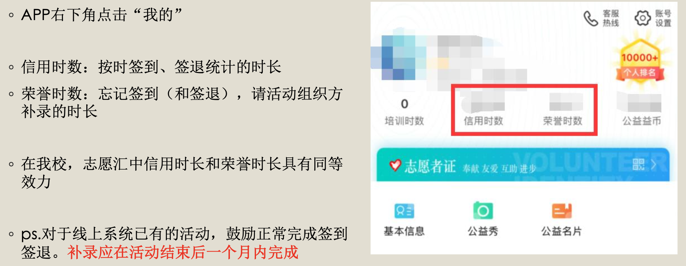

志愿汇和志愿服务时长（学生版）¶
FAQ¶
问：参加志愿服务必须要进行后面的操作以获取志愿服务学时吗?
答：不是必要的，但还是鼓励您进行相关操作进行志愿服务学时获取，一是可以为学校志愿者组织增加志愿服务总时长，二是可以留作证明或纪念， 三是可以用于评定校级星级志愿者。
问：志愿服务学时如何转化成第二课堂学时?
学生志愿者在志愿汇上记录、认证过的志愿服务时长，将定期被转化为“第二课堂”劳育模块学时。自2022年9月起，每月22日，系统首次将该月学生志愿服务时长转化为“第二课堂”学时。
如果没有做到以下几点，时长将不会被转化；补上之后，下一个22日导入日将会将以前的信息补充导入。
- 在志愿汇上填写个人信息：学校为「中国科学技术大学」、学号
- 在志愿汇上加入任何一个我校志愿服务组织
如何申请成为注册志愿者？¶
我校志愿服务时长依托“志愿中国”线上平台(即志愿汇)进行认证。学生需在此平台注册成为志愿者，并加入从属于我校的任一志愿者组织，如“XX学院青年志愿者协会”，才可参加校内的志愿服务活动。
如果此前从未使用过，需要先申请成为志愿者，请根据APP指引操作
在我校参与志愿活动的同学，接着需要进行如下操作:
- 完成学校、学号的填写，否则不能成功转化二课学时
- 确保左上角定位为合肥市，否则下面搜不到
- 在界面右上角搜索中国科学技术大学芳草社青年志愿者协会并加入组织
- 等待志愿组织负责人审核通过
维护学校、学号教程：

搜索定位示意图：
搜索加入示意图：
除此之外，也可以搜索所在院系青协一并加入。
如何报名、参与志愿服务活动？¶
志愿汇与二课不同，志愿活动不需要报名，只需要获得主办方提供的签到码，在限定地理、时间范围内进行签到、签退即可。
- 活动开始时，点击最下方“签到”按钮输入签到码，进行快速或者人脸签到（无区别）
- 活动结束时，点击最下方“签到”按钮进行签退（请保证在限定地理范围内，强制签退将不记录时长！）
我的志愿学时被记录在哪里？¶

志愿汇上我校组织有哪些？¶
志愿汇上我校组织有哪些？
◦ 中国科学技术大学纳米科学技术学院青年志愿者协会
◦ 中国科学技术大学芳草社青年志愿者协会
◦ 中国科学技术大学信息科学技术学院研究生会
◦ 中国科学技术大学微电子学院
◦ 中国科学技术大学少年班学院
◦ 中国科学技术大学数学科学学院青年志愿者协会
◦ 中国科学技术大学物理学院青年志愿者协会
◦ 中国科大化学与材料科学学院青年志愿者协会
◦ 中国科学技术大学工程科学学院
◦ 中国科学技术大学信息科学技术学院青年志愿者协会
◦ 中国科学技术大学计算机科学与技术学院
◦ 中国科学技术大学大数据学院
◦ 中国科学技术大学软件学院
◦ 中国科学技术大学地球和空间科学学院青年志愿者协会
◦ 中国科学技术大学生命科学与医学部
◦ 中国科学技术大学管理学院志愿中队
◦ 中国科学技术大学公共事务学院
◦ 中国科学技术大学人文与社会科学学院
◦ 中国科学技术大学马克思主义学院
◦ 中国科学技术大学环境科学与工程系
◦ 中国科学技术大学核科学技术学院
◦ 中国科学技术大学国家同步辐射实验室
◦ 中国科学技术大学合肥微尺度物质科学国家研究中心
◦ 中国科学技术大学火灾科学国家重点实验室
◦ 中国科学技术大学苏州高等研究院青年志愿者协会
◦ 中国科学技术大学先进技术研究院
◦ 中国科学技术大学高新园区
◦ 芳草社综合事务部
◦ 芳草社宣传外联部
◦ 芳草社校园服务团
◦ 芳草社启明星服务团
◦ 芳草社特教服务团
◦ 中国科学技术大学艺术教学中心科小艺志愿服务分队
◦ 中国科学技术大学图书馆志愿服务分队
◦ 中国科学技术大学芳草社校医院志愿服务队
◦ 中国科学技术大学招生工作志愿服务队
◦ 中国科学技术大学校友工作志愿服务队
◦ 中国科学技术大学国际志愿服务队
◦ 中国科学技术大学本科书院志愿服务分队
◦ 中国科学技术大学附属中学
◦ 中国科学技术大学附属幼儿园
◦ 中国科学技术大学后勤保障单位
◦ 中国科学技术大学机关部处直属单位
◦ 中国科大研究生招生志愿团队
• 中国科学技术大学研究生支教团
• 中国科学技术大学唐仲英爱心社
• 中国科学技术大学校友爱心社
• 中国科学技术大学自强社
• 中科大苏高院软件学院
说明：截至2022年11月26日，排名不分先后